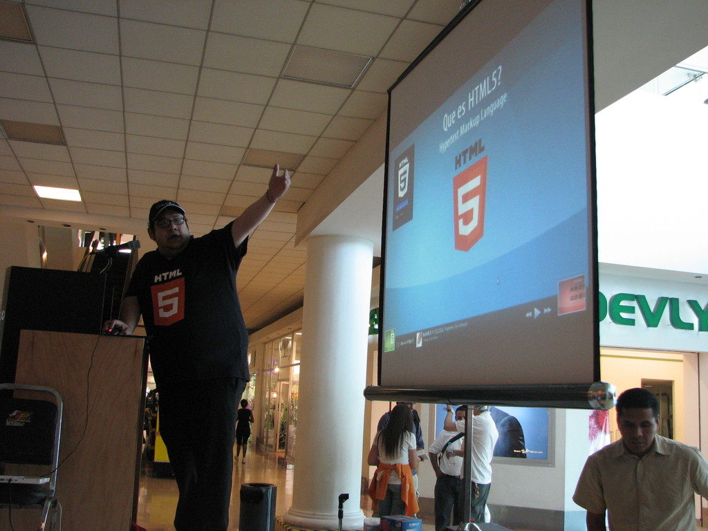

Install Fest
FLISOL 2014
Sábado 26 de Abril de 2014 - GULAG

Con el objetivo de promover y difundir el uso de Software Libre, el próximo sábado 26 de Abril de 2014 se llevará a cabo el Festival Latinoamericano de Instalación de Software Libre en Plaza Cuatro Caminos, atrio principal, en Torreón, Coahuila, México.
El Festival Latinoamericano de Instalación de Software Libre (FLISOL) es el evento internacional más importante y el más grande a nivel mundial de instalación de Software Libre; el cual es realizado gratuitamente, a los asistentes que participen llevando su equipo de cómputo, se les instala software libre en los mismos. El evento FLISOL lo ha venido realizando GULAG desde el año de 2006 ininterrumpidamente con el apoyo de diversos patrocinadores. El festival ha tomado tanta relevancia a nivel internacional que en ciudades de países NO latinoamericanos como Portugal, Estados Unidos y Canadá se han unido a su realización.
Distribuciones ofrecidas:
- Debian (recomendado)
- Guadalinex
- Manjaro
- Mint
- Opensuse
- Trisquel
- Ubuntu
Fecha Lugar y hora
- Lugar: Plaza Cuatro Caminos, Atrio principal. Blvd. Independencia #1300 Ote, Col. Navarro Torreón, Coahuila, México.
- Horario: De las 11:00 hasta las 18 horas.
Actividades
- Charlas
- Muestra de Software Libre
- Festival de instalación
- Contacto con la comunidad de Software Libre local.
ATENCIÓN
Se recomienda que antes de asistir al evento haga un RESPALDO DE LA INFORMACIÓN IMPORTANTE y defragmentar el disco duro.
Programa
- 11:00 Bienvenida
- 11:10 AM “El Software Libre y su cultura” por Osvaldo Salazar (ChicoXXX)
- 12:00 PM Los Mapas del Futuro por Sergio Aguilera
- 12:45 PM Firefox OS por Lula Villalobos
- 2:00 PM a 6:00 PM Installfest: Instalación de software libre en las computadoras que lleven los asistentes.
Evento dirigido a todo tipo de público: estudiantes, académicos, empresarios, trabajadores, funcionarios públicos, entusiastas y aun personas que no poseen mucho conocimiento informático.
Descargas
FLISOL 2012
2012-04-28 00:01 - guivaloz
El sábado 28 de abril en Plaza Cuatro Caminos se llevará a cabo el Festival Latinoamericano de Instalación de Software Libre 2010 (FLISoL) organizado por sexto año consecutivo por el Grupo de Usuarios de GNU/Linux de La Laguna (GULAG).
¿Qué es el FLISOL?
El FLISoL es el evento de difusión de Software Libre más grande en Latinoamérica. Se realiza desde el año 2005 y desde el 2008 se adoptó su realización el 4to Sábado de abril de cada año.
Su principal objetivo es promover el uso del software libre, dando a conocer al público en general su filosofía, alcances, avances y desarrollo.

FLISOL 2011 Reseña
2011-04-12 12:00 - guivaloz

El pasado 9 de abril de 2011 se llevó a cabo el Festival Latinoamericano de Instalación de Software Libre (FLISOL), organizado por cuarta ocasión por el GULAG y por primera vez en Plaza Cuatro Caminos.



Cabe destacar que al realizar el evento en un paseo comercial, se logró comunicar la alternativa del Software Libre a un número mucho mayor de personas que en ocasiones anteriores. Con ese fin, se repartieron mil trípticos con información del Software Libre a los visitantes.

FLISOL 2011
2011-04-09 00:01 - guivaloz
El sábado 28 de abril en Plaza Cuatro Caminos se llevará a cabo el Festival Latinoamericano de Instalación de Software Libre 2010 (FLISoL) organizado por sexto año consecutivo por el Grupo de Usuarios de GNU/Linux de La Laguna (GULAG).
¿Qué es el FLISOL?
El FLISoL es el evento de difusión de Software Libre más grande en Latinoamérica. Se realiza desde el año 2005 y desde el 2008 se adoptó su realización el 4to Sábado de abril de cada año.
Su principal objetivo es promover el uso del software libre, dando a conocer al público en general su filosofía, alcances, avances y desarrollo.

FLISOL 2010 Reseña
2010-05-05 23:00 - guivaloz
El pasado sábado 24 de abril se llevó a cabo el Festival Latinoamericano de Instalación de Software Libre FLISOL que por cuarto año consecutivo organiza el GULAG. El evento tuvo como sede nuevamente la Universidad Autónoma de Coahuila (UAC), en colaboración con Universidad Autónoma de La Laguna (UAL), la Universidad Tecnológica de Torreón (UTT) y el NIIT Laguna.

{kind=link}
{kind=link}
{kind=link}